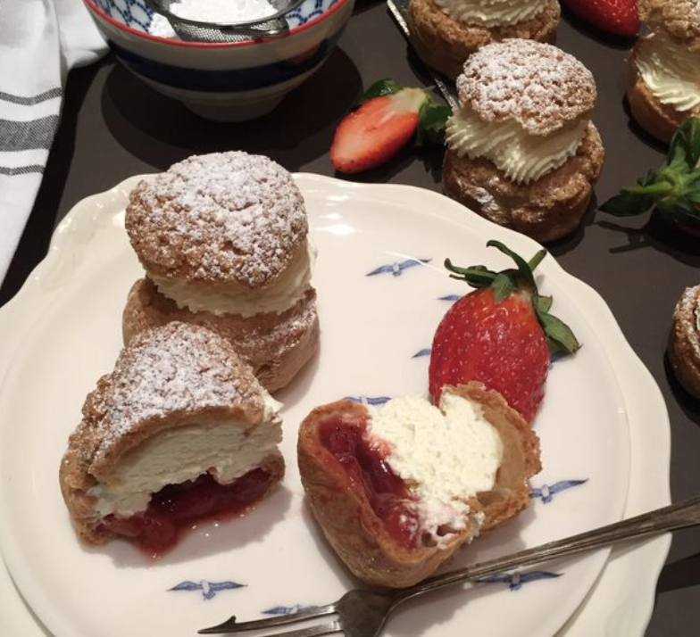

HEAVENLY PASTERIES
HOME
RECIPES
ABOUT
SUBMIT
Search
STRAWBERRY AND WHITE CHOCOLATE CHOUX BUNS

INGREDIENTS
50g butter
75g plain flour
2 large eggs
1 tbsp flaked almonds
2 tbsp custard powder
300ml milk
½ tsp sugar free vanilla extract
150ml Greek yogurt
5g coarsely grated white chocolate
125g small strawberries
dusting of icing sugar
INSTRUCTIONS
Line a large baking tray with baking paper. Heat oven to 200C, 180C fan gas 6. Heat the butter in a nonstick pan with 125ml water until melted. Increase the heat until boiling then remove from the heat and quickly beat in the flour until the mixture comes together as a ball. Cool 5 mins then beat the eggs with 1 tbsp water then beat into the pastry a little as a time to make a thick glossy mix.
Spoon onto the baking tray in 8 equal size blobs then add the almonds if using poking them into the mixture. Bake for 25-30 mins until well risen and golden. Take from the oven make a slash in the sides and return to the oven for 5 mins more to dry out.
While baking make the filling. Mix the custard powder with a little of the milk then, with the remaining milk and vanilla put in a non stick pan and cook, stirring over the heat until thickened. Stand for 5 mins then beat in the yogurt and set aside to cool, stirring frequently to make sure a skin doesn't form. When cold, stir in the grated chocolate.
Reserve 1 tbsp of the custard mix then use the rest to fill the buns. Distribute all but 8 halves of strawberries between the buns, then blob a little of the remaining custard filling on top and add the reserved strawberries. Lightly dust with the icing sugar before serving if you like.
 HEAVENLY PASTERIES
HEAVENLY PASTERIES